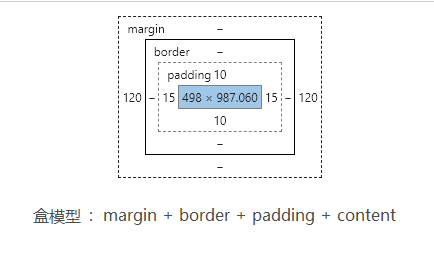

写文原因：感觉自己好久没认真的去写过一些样式布局，而且很多东西都在被遗忘，趁着今天过节，就把css的知识点整理一下把。
文章目录：
- 定位 - position
- 尺寸 - px, 百分比, rem, em, vw
- 浮动 - float
- 边距 - margin
- 两栏布局
- 三栏布局
position 属性 ———— 用于指定一个元素在文档中的定位方式
- static: 元素在文档常规流中当前的布局位置，static下 top，right，z-index等属性无效
- relative: 元素在文档流中，top和bottom是相对于元素当前位置的垂直方向的位移，而left和right是相对于元素水平方向的位置
- absolute: 绝对定位，元素的top，right等属性是相对于当前元素的最近祖先里有relative的元素的位移。 元素框不再占有文档流的位置 PS：如果当前元素有margin，也会算到位移里。
- fixed: 固定定位。脱离文档流，相对浏览器窗口进行定位。
- sticky：(这是css3新增的属性值)粘性定位，官方的介绍比较简单，或许你不能理解。 其实，它就相当于relative和fixed混合。最初会被当作是relative，相对于原来的位置进行偏移； 一旦超过一定阈值之后，会被当成fixed定位，相对于视口进行定位。
元素大小与单位 ,box-sizing
- px: 相对长度单位。像素px是相对于显示器屏幕分辨率而言的。(引自CSS2.0手册)
- em: 相对长度单位。相对于当前对象内文本的字体尺寸,如果当前行内文本的字体大小没有设置，则em就是相对于浏览器的默认字体尺寸。(引自CSS2.0手册)
- ps: 任意浏览器的默认字体高都是16px。所有未经调整的浏览器都符合: 1em=16px. 那么12px=0.75em,10px=0.625em。
em的值不是固定的。em会继承父级元素的字体大小（eg: 父级的字体声明为1.2，那么如果子元素没有声明字体，那么子元素的字体大小就是1.2*1.2，所以进行重新声明}） - em使用注意： ① body中声明font-size= 62.5% ②设计稿中的 px值/10 * em 做单位换算 ③ 重新计算那些被放大的字体的em数值，避免字体大小的重复声明
- rem: 相对单位(root em). rem在为元素设定大小时，相对的只有HTML根元素，
- 兼容写法： p{font-size:14px; font-size:0.8rem}
盒模型 box-sizing
一个block的元素默认盒模型：content-box 标准盒子模型:元素的width = 元素的内容content的宽度
浮动
- BFC : 块级格式化上下文。浮动元素和绝对定位元素，非块级盒子的块级容器（例如 inline-blocks, table-cells, 和 table-captions），以及overflow值不为“visible”的块级盒子，都会为他们的内容创建新的块级格式化上下文
-
清除浮动：
overflow: 将父元素的overflow，设置成hidden。
after伪类：对子元素的after伪类进行设置。
外边距
外边距：
使用陷阱：子元素的外边距会显示在父元素上。原因：
解决办法